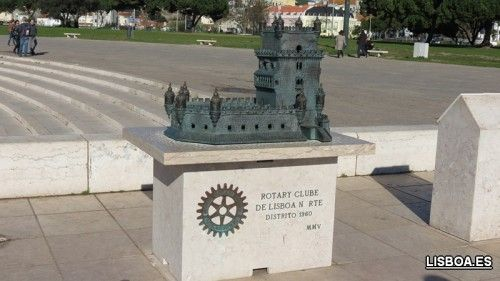

La historia de la Torre de Belém
La historia de la Torre de Belém Torre de Belem (Lisboa) A orillas del Tajo se erige la Torre de Belém de Lisboa, símbolo de la ciudad. Está declarada Patrimonio de la Humanidad y su ubicación sobre la antigua playa de Restelo, desde donde partían las carabelas en sus expediciones hacia otros continentes, no es casual.¡Encuentra rápido lo que buscas!La historia de la Torre de Belém
